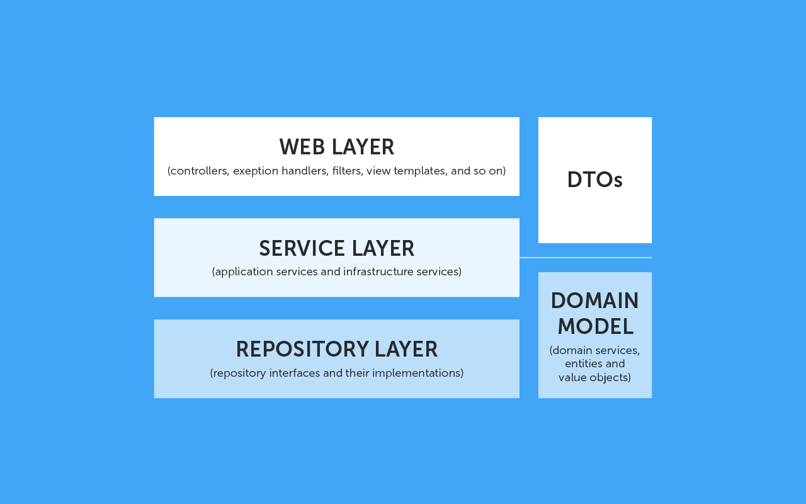

Главная
Java
Spring
Архитектура приложений Spring

Domain Model (Доменная модель) — классы-сущности предметной области (Entities), хранящиеся, как правило, в базе данных. Классы создаются обычно вручную, но можно построить структуру автоматически, на основе схемы БД.
Repository Layer (Слой репозиториев) — набор классов, которые обеспечивают работу с хранилищем данных. Как правило, этот слой использует различные ORM фреймворки и содержит логику для выполнения CRUD операций. Если говорить о Spring, то репозитории получаются достаточно компактными, в основном за счет JPA Query methods, но зачастую приходится писать логику выборки из базы и отображение на доменную модель вручную.
Service Layer (Слой сервисов) — слой приложения, который содержит реализацию бизнес-логики, алгоритмы обработки информации, специфичные для предметной области. Это полезно в случае сложных алгоритмов обработки, а также для работы с данными из разных источников (БД, внешние приложения, сервисы из Интернета и т.д.).
Web/Controllers Layer (Слой контроллеров) — классы, отвечающие за REST API. Обычно контроллеры работают с DTO, а не с классами из доменного слоя, поэтому в приложение добавляется функциональность по конвертации DTO в Entity и обратно.